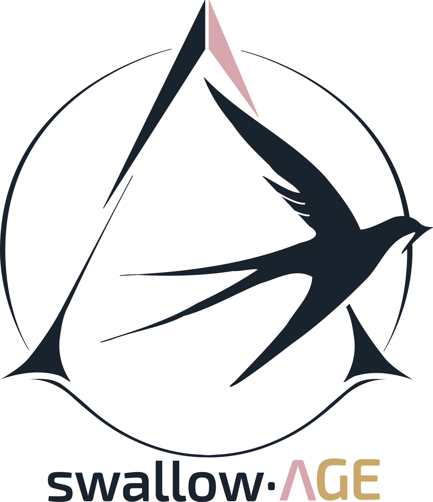

Tout arrive pour une bonne raison
Des outils pensés et construits un à un, publiés librement.
Un système d'information géographique local, pensé pour rendre les données d'un territoire lisibles et accessibles, sans complexité inutile.
Découvrir GéoBercéD'autres créations viendront s'ajouter ici, au fil de l'eau.
swallow·AGE n'est pas une entreprise ni une signature personnelle : c'est un espace où des outils sont partagés sans rien attendre en retour, dans la continuité d'un goût plus ancien pour le service et l'utilité collective.
Le nom porte une hirondelle — un oiseau qui revient chaque année, qui parcourt de longues distances et qui, dans beaucoup de cultures, annonce simplement que quelque chose de bon commence. Trois initiales sont dissimulées dans le monogramme : une empreinte discrète de ce qui compte le plus, sans qu'il soit nécessaire de la rendre publique.
Petit à petit, l'oiseau fait son nid.